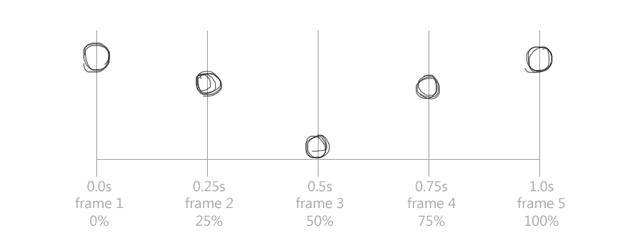
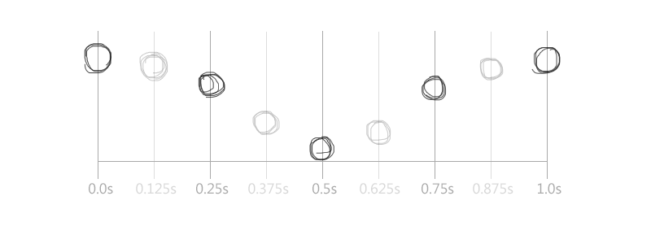

In traditional animation, artists would create key moments that define the motion of an object. When viewing these frames in sequence, their perceived motion is not very fluid.

To smooth out the animation, "in-betweeners" would draw the rest of the frames that would bridge the key frames together

Here is an example of an animtion composed of only key frames (left), and an animation with all frames drawn.
Before we can animate, we need understand the fundamentals of motions in HTML and CSS.
transition: property duration easing delay;
-webkit-transition-property:opacity, left;
-webkit-transition-duration:2s, 0.2s;
-webkit-transition-timing-function:ease-in-out;
-webkit-transition-delay:0, 4s;
-webkit-transform:rotate3d(0, 0, 0, 0deg);
-webkit-transition:all 2s ease-out 0;
Now that we have the basic understanding of transitions and timing, we can create a series of transitions to produce an animation.
In order to create animations in CSS3, we need two things:
@keyframes ANIMATION-NAME {
n% { property: value; }
}
selector {
animation: ANIMATION-NAME duration delay iterations timing;
}
@-webkit-keyframes FADE-OUT {
0% { opacity: 1; }
100% { opacity: 0; }
}
#milo {
-webkit-animation:FADE-OUT 3s 0s infinite;
}
We invite you to build something great and apply at Nitro!